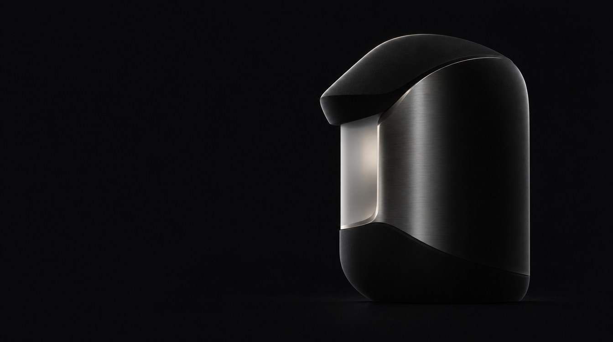
AI × Industrial Design
From Problem to AI Concept
Kyung Hee University — Industrial Design
AI × Industrial Design · 6 Weeks · 12 Sessions
From Problem to
Final Presentation
W01
Define & Explore
문제 정의·탐색
W02
Form & CMF
형태·색채·재료·마감
W03
Multi-view
다각도 정합성
W04
Detail
디테일 구체화
W05
In-use
사용 장면
W06
Presentation
최종 발표
강사 2인 교차 진행 · 매주 2회 · 최종 결과물: 콘셉트 1개의 완성 프레젠테이션
02
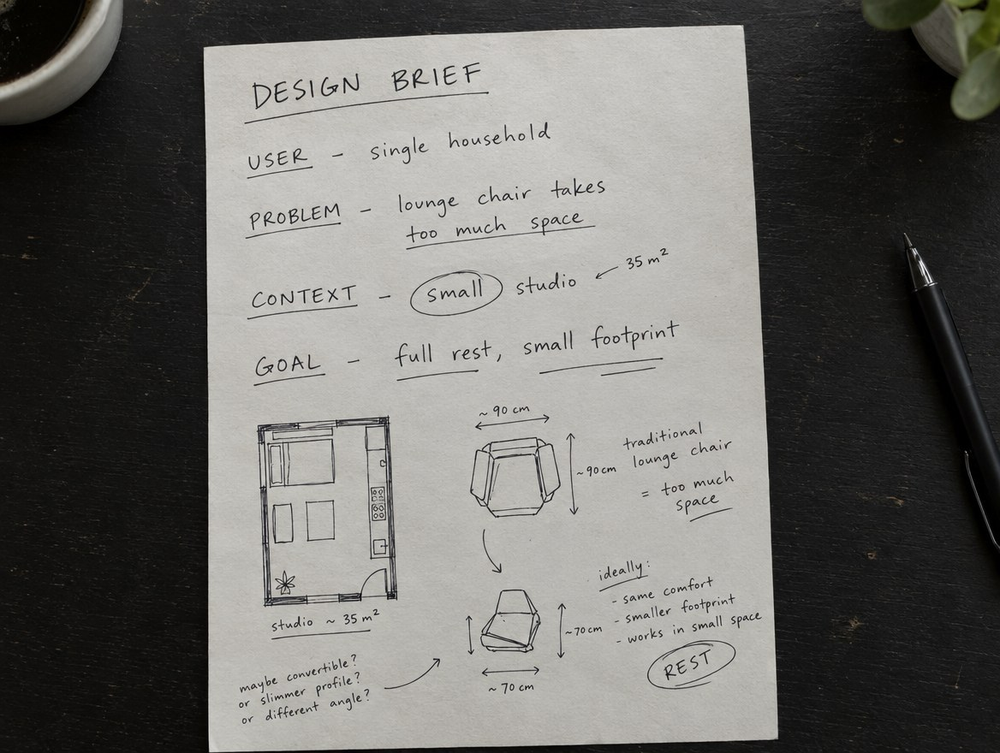
01 — Design Brief
DEFINE
무엇을 만들 것인가
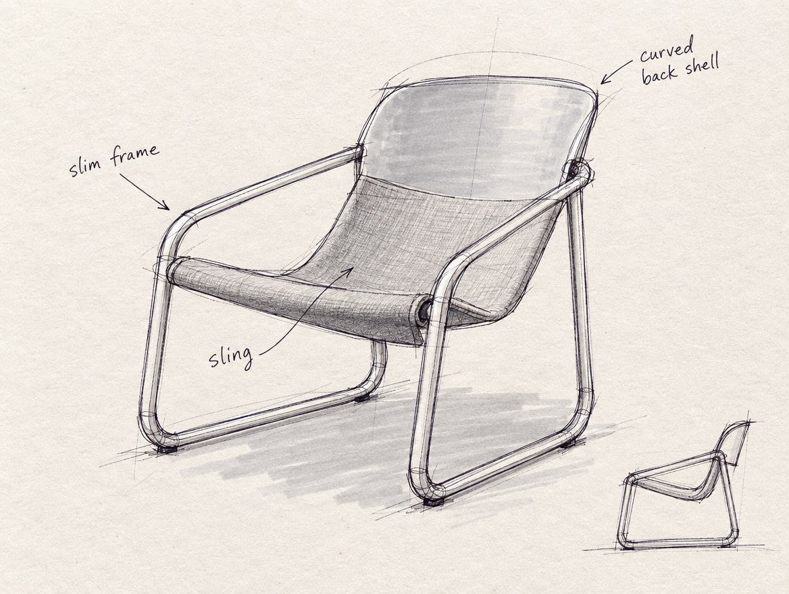
02 — Rough Sketch
EXPLORE
어떤 형태가 가능한가
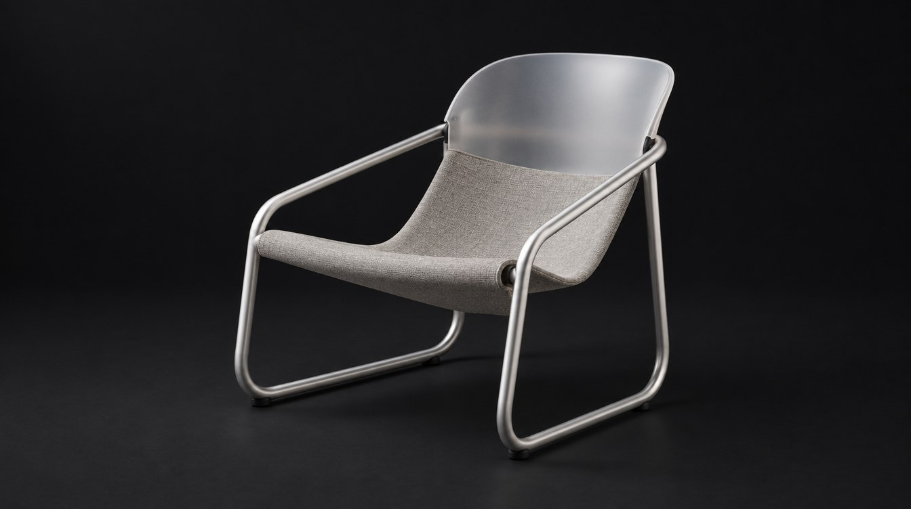
03 — AI Visualization
VISUALIZE
아이디어를 눈으로 확인한다
03
01
Research
02
Problem
03
Ideation
04
Sketch
05
Concept
06
Prototype
07
Visualization
08
Presentation
하나의 제품은 여러 단계를 거치며 조금씩 구체화된다.
04
좋은 결과물보다 먼저 필요한 것은 좋은 문제와 좋은 방향입니다.
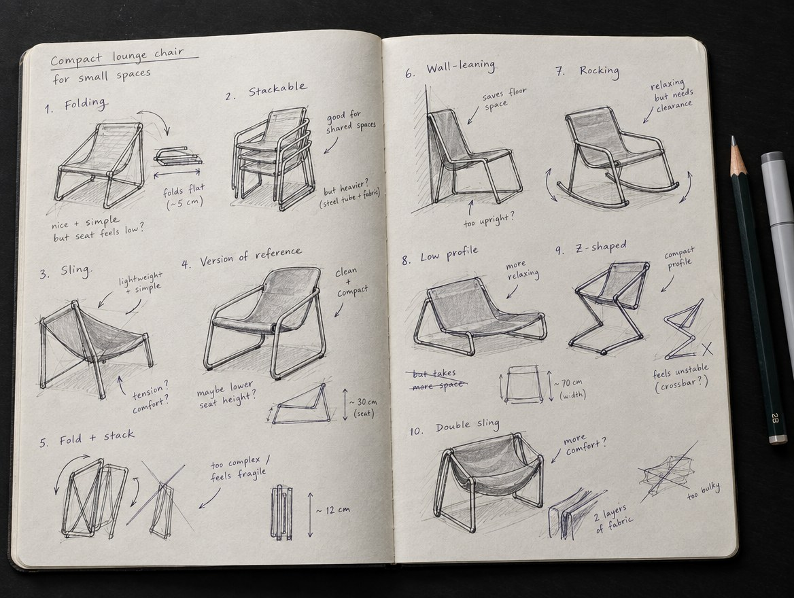
Process — 문제 · 아이디어 · 스케치
Final Form
05
Research
Problem
Ideation
Sketch
Concept
Prototype
Visualization
Presentation
모든 단계에 걸쳐 함께 쓰는 도구
AI
AI는 하나의 단계가 아니라
디자인 과정 전체를 가속하는 도구입니다.
06
WHY
JUDGMENT
CONTEXT
DECISION
DESIGNER
생성은 AI가 돕지만, 무엇을 만들고 무엇을 고를지는 디자이너가 결정한다.
07
01
Define the Problem
What are we designing?
Product-first
새로운 의자를 만들자.
Product-first
새로운 의자를 만들자.
Problem-first
좁은 공간에서도
편하게 쉴 수 없을까?
09
01
WHO
누구를 위한 것인가?
02
PROBLEM
무엇이 불편한가?
03
CONTEXT
언제, 어디에서 사용하는가?
10
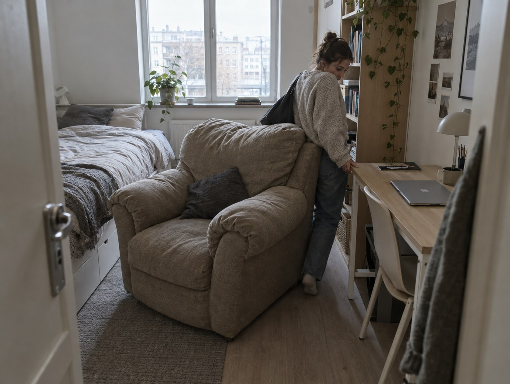
WHO
작은 원룸의 1인 거주자
PROBLEM
휴식용 가구가
침대와 책상 사이 이동을 방해한다
CONTEXT
침대·책상과 나눠 쓰는 공간
11
WHO + PROBLEM + CONTEXT
DESIGN GOAL
작은 공간에서도
충분한 휴식을 제공하는 의자
12
좋은 브리프는 다섯 가지 질문에 답한다
01
USER
누구를 위한 것인가
02
PROBLEM
어떤 문제를 해결하는가
03
CONTEXT
어디에서 사용하는가
04
FUNCTION
무엇을 해야 하는가
05
EXPERIENCE
어떤 경험을 제공하는가
13
가상의 교육용 브리프 · A Chair for Small Spaces
한 장으로 정리한 Design Brief
다섯 질문에 모두 답한 브리프 예시
ROUGH SKETCH · 이 브리프에서 출발한 첫 스케치
01
USER
작은 원룸에서 작업 후 앉아서 쉬고 싶은 1인 거주자
02
PROBLEM
휴식용 가구가 침대와 책상 사이의 이동을 방해한다
03
CONTEXT
침대·책상·휴식 가구가 같은 공간을 나누어 쓴다
04
FUNCTION
작은 바닥 면적으로 기대어 쉬는 자세를 받쳐 준다
05
EXPERIENCE
"방을 좁히지 않고, 가볍게 놓인 휴식"
14
A · 현재 배치
의자가 침대와 책상 사이의
이동 경로와 겹친다
B · 해결안이 만족할 조건
어떤 배치든,
세 가지를 함께 만족해야 한다
01
침대와 책상 사이
이동이 막히지 않는다
02
기대어 쉬는 자세를
받쳐 준다
03
가구를 크게 옮기지 않고
휴식으로 전환된다
침대 · 책상
휴식 의자
이동 경로
창
정답은 하나가 아니다 · 방법은 Explore에서 여러 안으로 그려 본다
15
같은 사람, 다른 문제, 다른 제품
문제가 바뀌면, 만들 것이 바뀐다
USER
작은 원룸에서 작업 후 쉬고 싶은 1인 거주자
CONTEXT
침대 · 책상 · 휴식 가구가 한 공간을 나누어 쓴다
PROBLEM 01
휴식 가구가 침대와 책상
사이의 이동을 방해한다
→ 만들 것
휴식 의자
이 교안이 따라가는 예시
PROBLEM 02
일하던 자리에서 쉬면
일과 휴식이 구분되지 않는다
→ 만들 것
조명 · 파티션
같은 사람에게서 나온 다른 답
PROBLEM 03
쉴 자리가 늘
옷과 물건에 덮여 있다
→ 만들 것
수납이 결합된 좌석
같은 사람에게서 나온 다른 답
제품 이름이 아니라 문제에서 출발한다. 사용자와 상황이 같아도, 어떤 불편을 고르느냐에 따라 만들 것이 달라진다.
16
Practice 01
나의 사용자와 문제를 정하고, 다섯 질문에 답하세요.
작성 절차
1. 사용자와 문제 정하기
2. 다섯 항목 작성
3. Design Goal 한 문장
제출물
브리프 1장
완료 기준
다섯 항목이 모두 채워짐
문제와 만들 것이 한 문장으로 정리됨
17
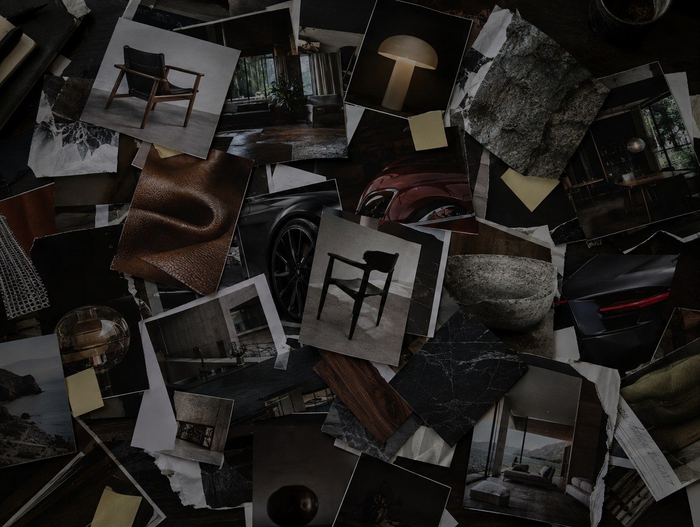
02
Research & Reference
Don't collect. Analyze.
01 · 형태
FORM
02 · 소재
CMF
03 · 디테일
DETAIL
04 · 맥락
CONTEXT
Reference ≠ Decoration
Reference = Decision
19
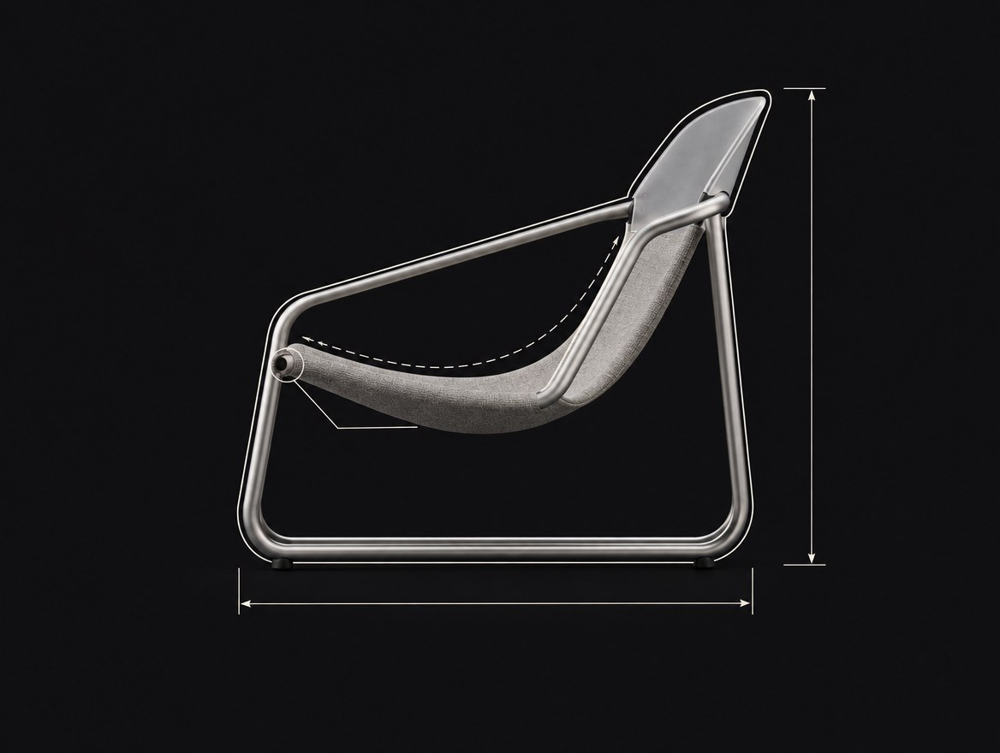
FORM
어떤 형태적 특징을 가져올 것인가?
'생김새'가 아니라 형태를 만드는 원리를 찾는다
SILHOUETTE · 실루엣
멀리서 봐도 구분되는 전체적인 외형은 무엇인가?
01 Silhouette
PROPORTION · 비례
길이, 높이, 두께와 각 부분의 비율은 어떻게 구성되어 있는가?
02 Proportion
GEOMETRY · 조형
직선/곡선, 각진/둥근 형태 중 어떤 조형 언어를 사용하는가?
03 Geometry
STRUCTURE · 구조
각 덩어리와 부품은 어떤 방식으로 연결되어 있는가?
04 Structure
20
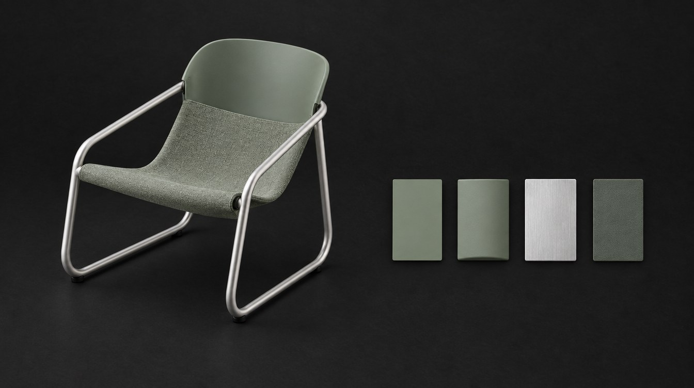
CMF
어떤 감각과 인상을 만들 것인가?
어떤 색인가보다 '어떤 인상을 만드는가'를 찾는다
COLOR · 색상
색상 자체뿐 아니라 저채도/고채도, 따뜻함/차가움, 색상 조합은 어떠한가?
MATERIAL · 소재
Metal · Plastic · Wood · Fabric · Glass 등 어떤 재료를 사용하고 있는가?
FINISH · 마감
Glossy · Matte · Brushed · Transparent — 표면은 빛과 촉감을 어떻게 표현하는가?
COMBINATION · 조합
서로 다른 소재가 어떤 비율과 방식으로 함께 사용되는가?
Sage Green · Matte Polymer · Brushed Aluminum · Soft-touch
연두색이 예뻐서 가져왔다.
저채도의 Sage Green과 Matte Plastic 조합이 부드럽고 생활공간에 자연스럽게 어울리는 인상을 만들어 참고했다.
21
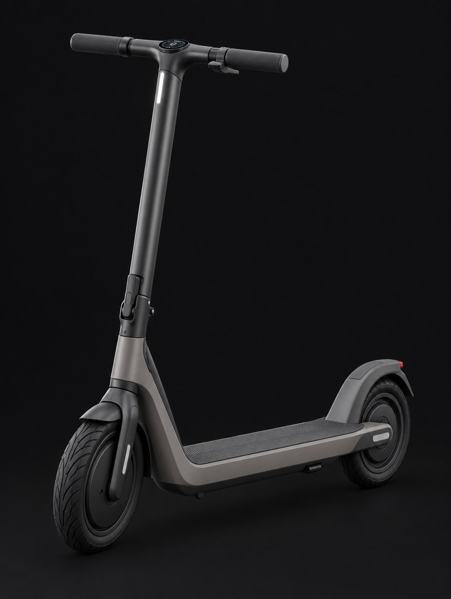
DETAIL
완성도는 어디에서 만들어지는가?
전체 형태보다 '완성도를 만드는 작은 결정'을 찾는다
JOINT · 결합
부품과 부품이 어디서, 어떻게 만나는가?
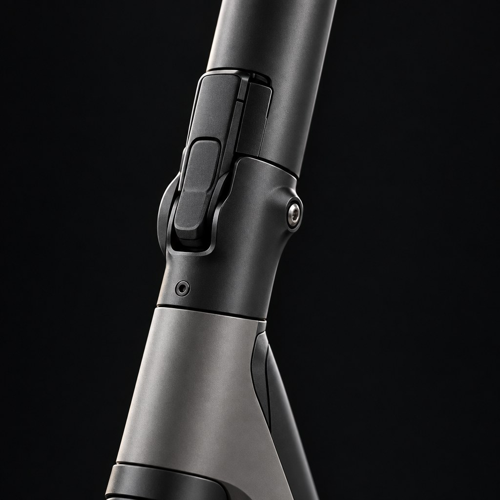
Joint
EDGE · 엣지
모서리가 Sharp한가, Round한가? 곡률은 어느 정도인가?
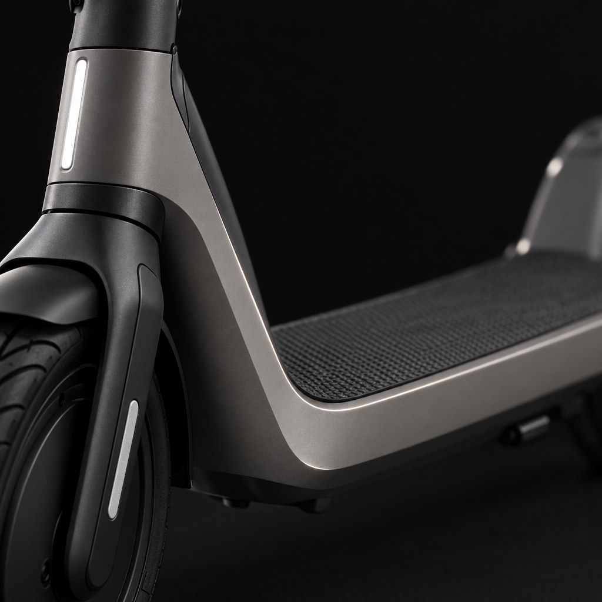
Edge
INTERFACE · 인터페이스
버튼, 손잡이, 디스플레이 등 사용자가 만지는 부분은 어떻게 디자인되어 있는가?
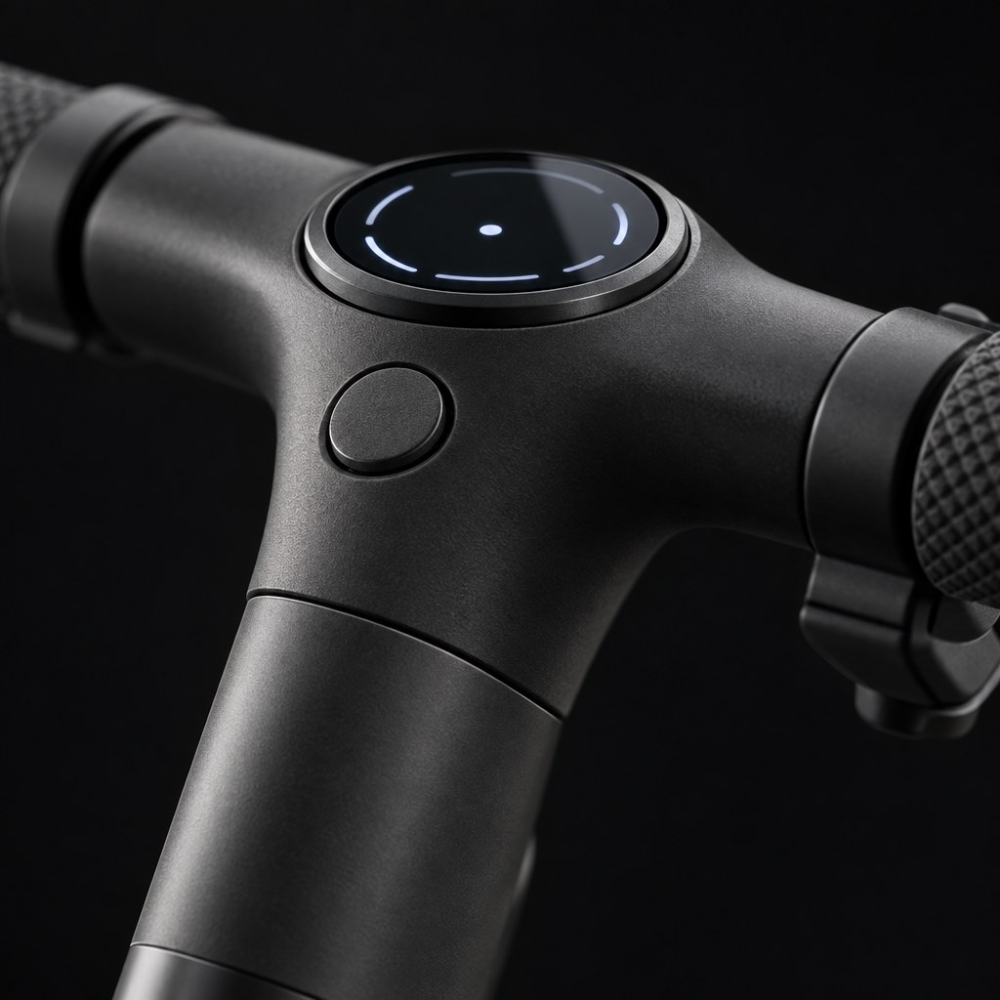
Interface
TRANSITION · 연결
서로 다른 형태나 소재가 만날 때 어떻게 자연스럽게 전환되는가?
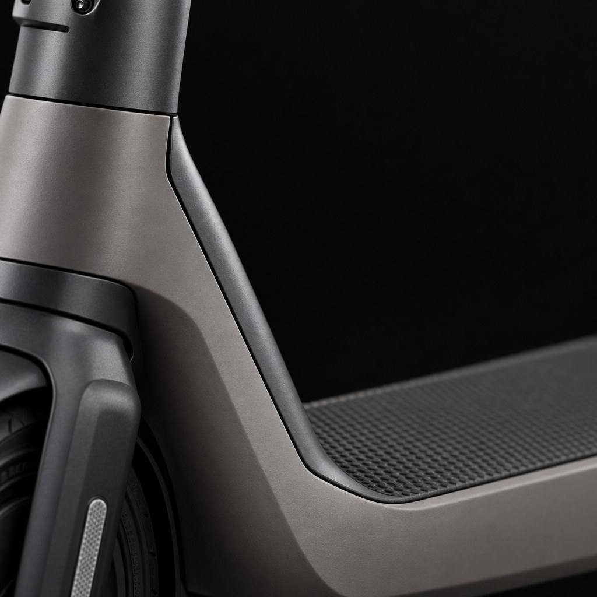
Transition
+ Seam · Gap · Pattern · Texture · Fastener
모빌리티라면 전체 사진이 아니라 핸들 연결부 · 버튼 · 디스플레이 · 프레임 접합부 · 조명 · 소재가 바뀌는 경계를 확대해서 찾는다.
22
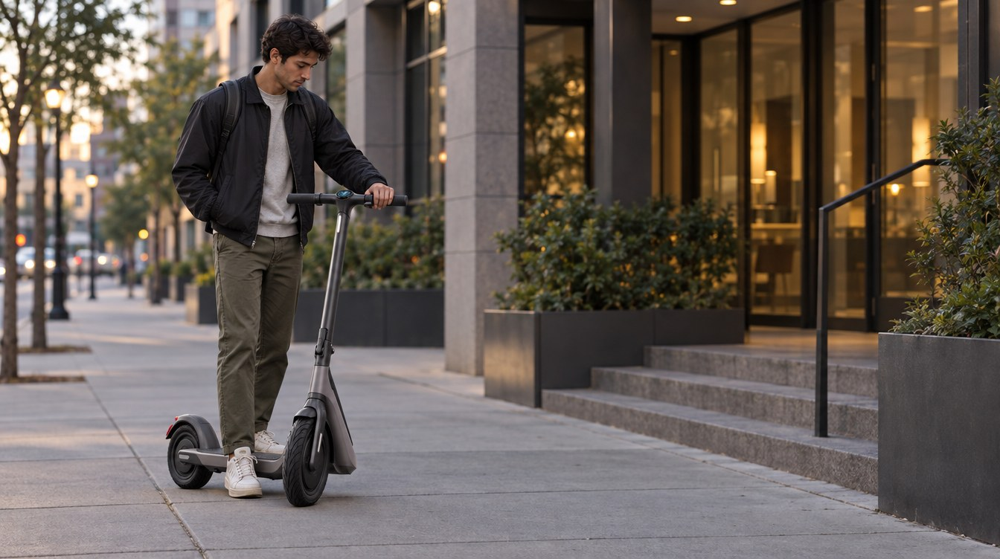
CONTEXT
어디에서, 누가, 어떻게 사용하는가?
제품이 아니라 '제품이 존재하는 상황'을 찾는다
USER · 사용자
누가 사용하는가? 연령, 신체 조건, 행동 특성은?
USER
ENVIRONMENT · 환경
Indoor · Outdoor · Home · Office · Public — 어떤 공간인가?
ENVIRONMENT
BEHAVIOR · 행동
어떻게 접근하고, 잡고, 조작하고, 사용하는가?
BEHAVIOR
SCALE · 스케일
사람과 제품, 제품과 공간의 크기 관계는?
PRODUCT
MOMENT · 순간
어떤 순간이 제품의 가치를 가장 잘 전달하는가?
Approach → Grip → Check → Ride → Arrive
하나의 순간이 이후 In-use 이미지와 Motion 제작으로 이어진다.
23
왜 이 이미지를 가져왔나요?
FORM
어떤 형태를
참고할 것인가?
CMF
어떤 소재와 인상을
참고할 것인가?
DETAIL
어떤 디테일을
참고할 것인가?
CONTEXT
어떤 사용 상황을
참고할 것인가?
"예뻐서"는 이유가 될 수 없습니다.
형태 · 색 · 소재 · 맥락의 언어로 말합니다.
Reference ≠ Decoration · Reference = Decision
24
Categorize
모은 이미지를
AI에게 분류시킨다
고르는 건 내가, 정리하는 건 AI가.
"왜 가져왔나"의 초안을 문장으로 받는다.
PROMPT · 이미지 첨부
"이 이미지들을 FORM / CMF / DETAIL / CONTEXT 기준으로 분류하고(복수 가능), 각 이미지에서 참고할 만한 요소를 한 줄씩 적어 줘. '예쁘다' 같은 표현은 쓰지 마."
THEN YOU CHECK
AI가 쓴 설명이 이미지와 맞는지 검토하고 내 문장으로 고쳐 쓴다.
AI 설명의 정확성을 검토하고 직접 수정한다. 브리프와 무관한 자료만 제외한다. 판단은 디자이너가 한다.
25
콜라주가 아니라, 분석 보드
각 이미지에 범주 태그(복수 가능) · 참고 요소 · 선택 이유를 적는다
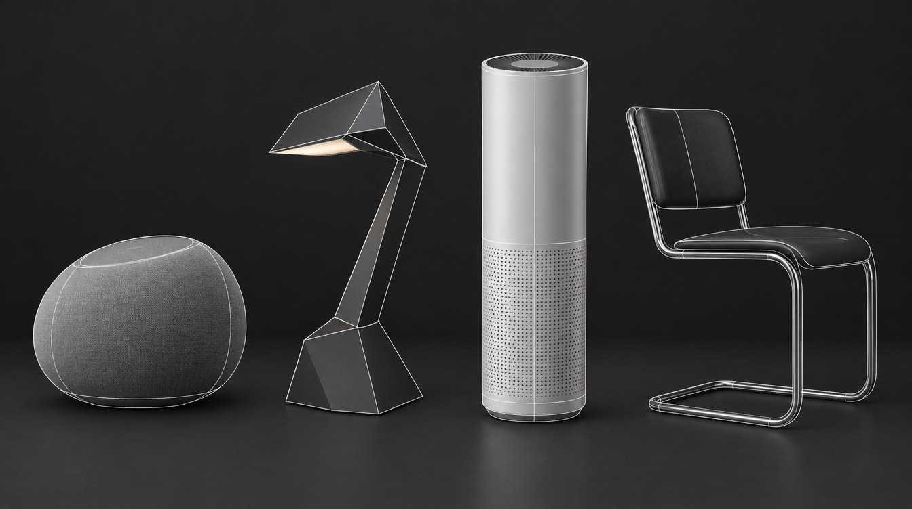
01
FORM
참고 캔틸레버 튜브의 연속된 선
이유 다리 수를 줄여 바닥 점유를 가볍게 보이게 하는 방식
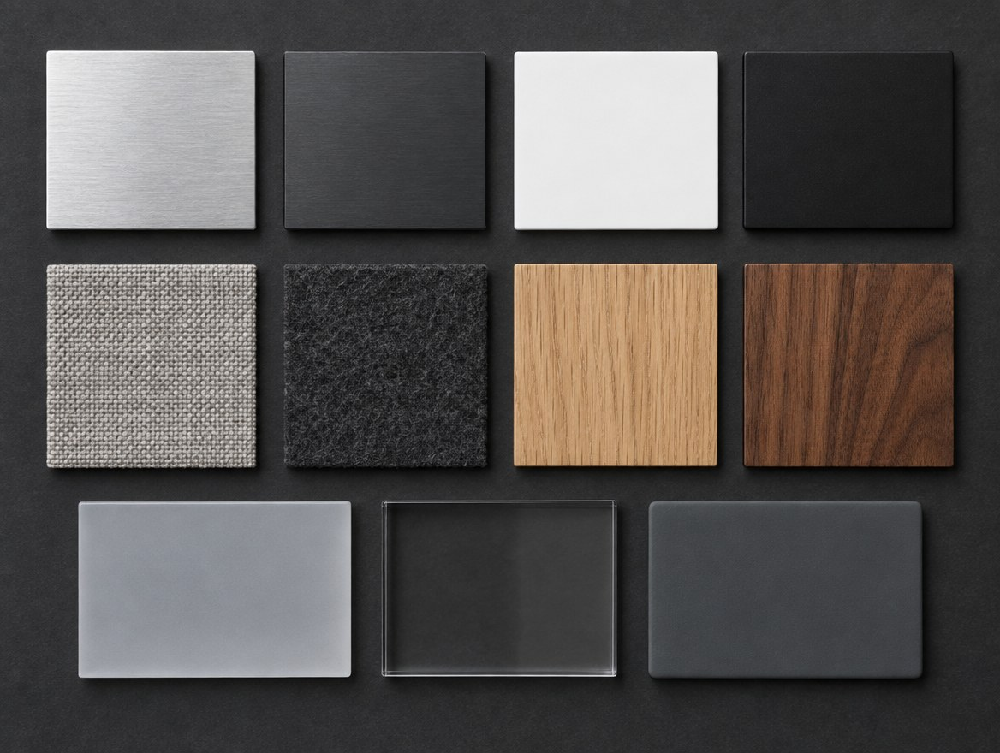
02
CMF
참고 브러시드 금속과 회색 패브릭의 대비
이유 원룸의 차분한 톤 안에서 재질 차이로 인상을 만든다
03
DETAIL
FORM
참고 튜브와 부품이 만나는 결합부
이유 가는 프레임에서 연결부가 정리되어 보이는 방식
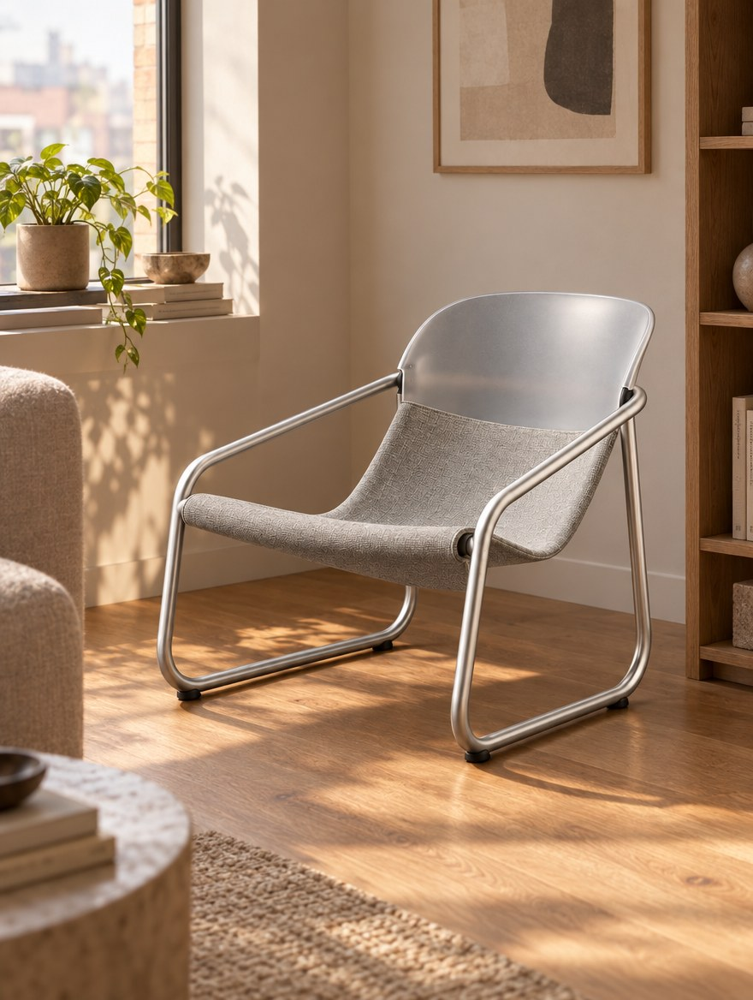
04
CONTEXT
CMF
참고 창가 코너에 놓인 1인 의자의 스케일
이유 침대·책상과 공간을 나누는 배치 관계
KEYWORDS
연속된 프레임
차분한 금속과 패브릭
작은 점유
DIRECTION
"작은 방에서 가볍게 보이는, 연속된 프레임의 휴식 의자"
26
Practice 02
Form 3 · CMF 3 · Detail 3 · Context 3 — 총 12장
작성 절차
1. 범주별 3장씩 12장
2. 이미지마다 참고 요소 한 줄
3. 키워드 3 + 방향 문장 1
제출물
분석 보드 1장
키워드 3개
방향 문장 1개
완료 기준
모든 이미지에 참고 요소 한 줄
'예쁘다' 대신 형태·색·소재·맥락의 언어
27
03
Ideation
One problem. Many possibilities.
1
3
6
12
Quantity before Quality
29
Rough Sketch
잘 그리는 것이 목적이 아닙니다.
빠르게 생각을 꺼내는 것이 목적입니다.
30
Explore
Diverge
A
B
C
D
E
F
G
H
Converge
A
C
F
C
Select
31
가장 예쁜 것이 아니라, 가장 맞는 것을 고른다
01
FORM
의도한 형태인가
02
FUNCTION
기능이 드러나는가
03
USABILITY
실제로 쓸 수 있는가
04
CONTEXT
환경에 어울리는가
32
Practice 03
같은 문제를 서로 다른 6가지 방법으로 해결해보세요.
작성 절차
1. 해결안 6개 이상 스케치
2. 변형이 아닌 다른 해결 방식
3. 네 기준으로 2안 선택
제출물
서로 다른 해결안 6개
선택 이유 2개
완료 기준
6안의 해결 방식이 서로 다름
선택 이유를 FORM · FUNCTION · USABILITY · CONTEXT로 설명
33
04
AI Visualization
Sketch → AI → Concept
Sketch
나의 형태
+
Reference
판단의 근거
+
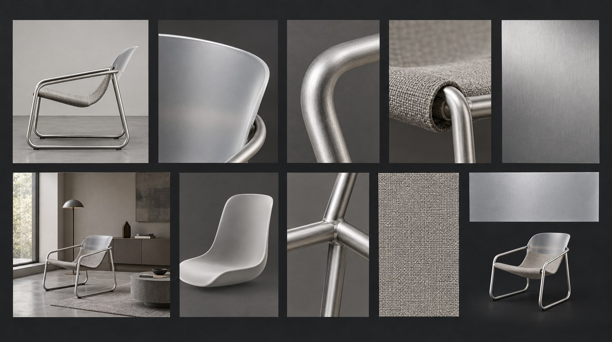
Direction
시각적 방향
AI VISUALIZATION
프롬프트 한 줄이 아니라, 나의 의도와 시각 정보를 전달한다
35
ROUGH SKETCH
→
AI VISUALIZATION
실루엣 · 비율 · 구조의 보존을 지시하고,
원본과 결과를 대조한다.
AI가 자동으로 지켜주지 않는다.
36
LIGHT
FORM
MATERIAL
CAMERA
COLOR
PROPORTION
CONTEXT
AI가 정하게 두지 말고, 하나씩 내가 결정한다
37
문장이 아니라, 구조로 생각한다
01
WHAT
무엇인가
02
FORM
어떤 형태인가
03
MATERIAL
무엇으로 만들어졌는가
색상·마감 포함
04
CAMERA
어떻게 볼 것인가
05
CONTEXT
어디에 있는가
배경·조명 포함
Prompt Structure
WHAT + FORM + MATERIAL + CAMERA + CONTEXT
38
Prompt
Structure → Sentence
같은 스케치, 다른 프롬프트
BEFORE
"현대적인 의자, 미니멀, 고품질, 4K, 예쁘게"
→ 품질 키워드만으로는 의도가 전달되지 않는다.
형태도 소재도 AI가 정한다.
AFTER · 스케치 이미지와 함께 입력
[WHAT]
작은 원룸을 위한 1인 휴식 의자
[FORM]
하나로 이어진 튜브 프레임, 낮은 좌면, 슬링형 좌판
[MATERIAL]
은색 브러시드 알루미늄 프레임, 중간 회색 패브릭 좌판, 은색 금속 등판 (시각화 목표)
[CAMERA]
전면 3/4 시점, 눈높이(eye-level), 50mm
[CONTEXT]
스튜디오, 부드러운 자연광, 단색 다크 배경
[유지 조건]
스케치의 실루엣·비율·구조를 유지해 줘
keep the silhouette, proportion and structure of the sketch
[이번 변경]
등판 높이만 조금 낮춘다. 그 외는 바꾸지 않는다.
유지 조건은 지시일 뿐 보장이 아니다. 결과는 매번 원본 스케치와 대조한다.
39
AI 결과가 나오면 끝?
No.
Generate ≠ Design
Generate → Judge → Modify
40
생성하고, 판단하고, 고친다
01 SKETCH
Rough Sketch
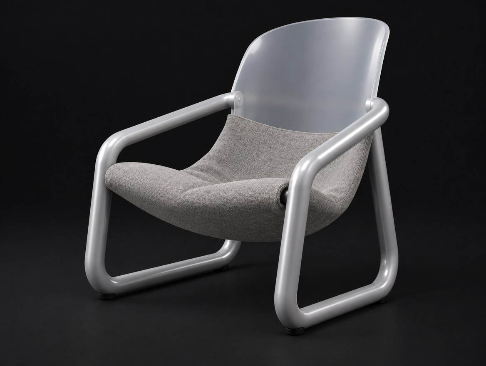
02 AI
First Render
03 REVIEW
문제 영역 표시
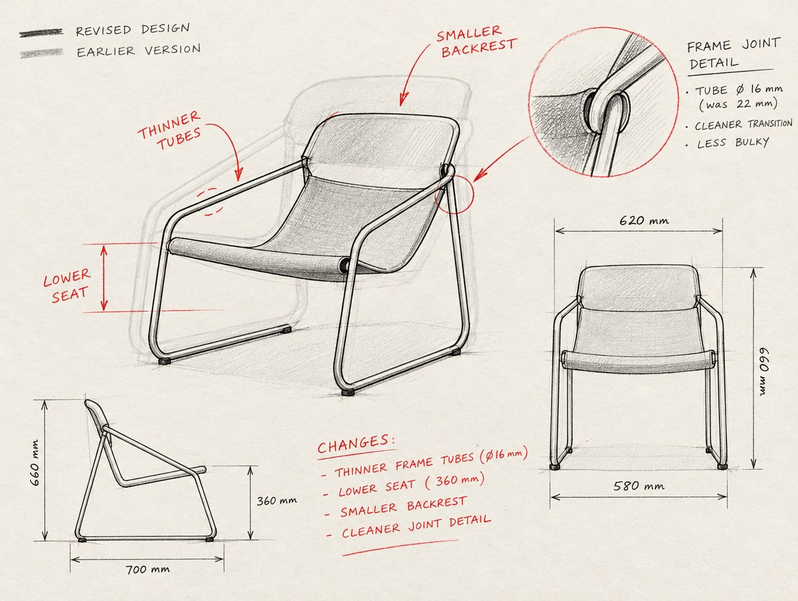
04 MODIFY
Modified Sketch
05 AI
Refined Render
LOOP — REVIEW AGAIN
제품의 정체성은 유지하고, 판단을 통해 다듬어 간다.
41
01
의도한 형태인가?
02
기능이 보이는가?
03
사용 가능해 보이는 구조인가?
04
사용 맥락에 적합한가?
05
무엇을 유지할 것인가?
06
무엇을 바꿀 것인가?
Don't ask AI. Decide.
42
Practice 04
첫 생성 1회 + 수정 생성 2회 = 총 3회 생성
작성 절차
1. 스케치 1개 선택, 유지 조건 적기
2. 첫 생성 1회
3. 판단 · 문제 영역 표시
4. 수정 생성 2회
제출물
첫 렌더 + 문제 영역 표시
최종 렌더 1장
유지한 것 / 바꾼 것 각 한 줄
완료 기준
원본 스케치와 결과를 대조함
유지한 것과 바꾼 것을 설명할 수 있음
43
02
FIRST GENERATION
PROPORTION
STRUCTURE
CMF
05
REFINED CONCEPT
44
01
Design Brief
02
Visual Direction
03
Rough Sketch
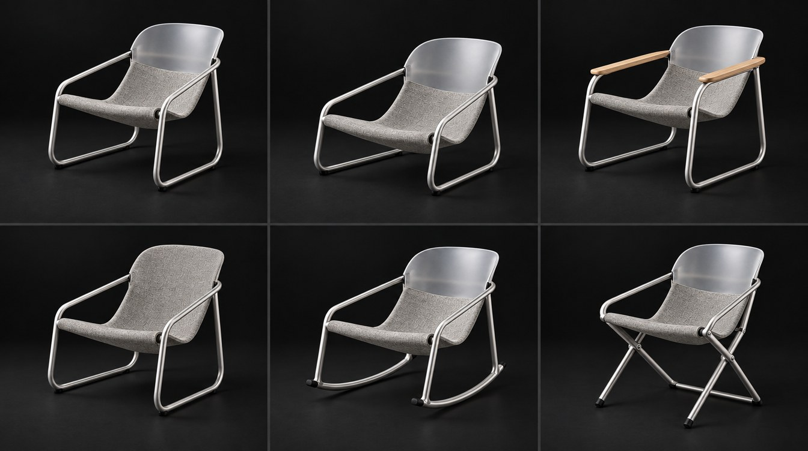
04
AI Exploration
05
Selected Concept
Your First Concept
45
Problem
문제 정의 메모
Reference
Moodboard
Sketch
Rough Sketch
AI Exploration
여러 개의 렌더링
Selected Concept
최종 Concept Render
Problem → Think → Sketch → Generate → Judge → Modify
46
FORM
CMF
MULTI-VIEW
DETAIL
IN-USE
From Concept to Design